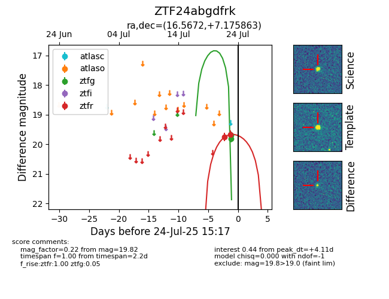

Target ZTF24abgdfrk at 2025-07-24 15:17, see:
FINK: fink-portal.org/ZTF24abgdfrk
Lasair: lasair-ztf.lsst.ac.uk/objects/ZTF24abgdfrk
ALeRCE: alerce.online/object/ZTF24abgdfrk
alt names
ZTF24abgdfrk (ztf,fink)
coordinates:
equatorial (ra, dec) = (16.5672,+7.17586)
galactic (l, b) = (129.4375,-55.50844)
photometry
last ztfg=19.82, ztfr=19.67
2 ztfg, 2 ztfr detections
